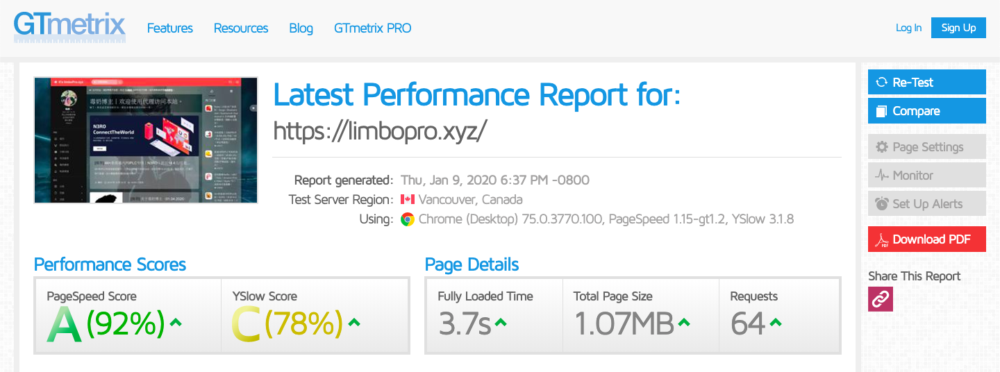

I. 主理人说

via https://gtmetrix.com/reports/limbopro.com/KSre06ep
II. 前提说明
0.服务器系统为 Ubuntu；
1.已顺利迁移；
2.已加装WAF：https://github.com/loveshell/ngx_lua_waf
3.大家可以强制刷新本站，狂按F5试试；
以上。
III. OpenResty®介绍
OpenResty - Turning Nginx into a Full-Fledged Scriptable Web Platform;
OpenResty® 是一个基于 Nginx 与 Lua 的高性能 Web 平台，其内部集成了大量精良的 Lua 库、第三方模块以及大多数的依赖项。用于方便地搭建能够处理超高并发、扩展性极高的动态 Web 应用、Web 服务和动态网关。
OpenResty® 通过汇聚各种设计精良的 Nginx 模块（主要由 OpenResty 团队自主开发），从而将 Nginx 有效地变成一个强大的通用 Web 应用平台。这样，Web 开发人员和系统工程师可以使用 Lua 脚本语言调动 Nginx 支持的各种 C 以及 Lua 模块，快速构造出足以胜任 10K 乃至 1000K 以上单机并发连接的高性能 Web 应用系统。
OpenResty® 的目标是让你的Web服务直接跑在 Nginx 服务内部，充分利用 Nginx 的非阻塞 I/O 模型，不仅仅对 HTTP 客户端请求,甚至于对远程后端诸如 MySQL、PostgreSQL、Memcached 以及 Redis 等都进行一致的高性能响应。
参考 组件 可以知道 OpenResty® 中包含了多少软件。
参考 上路 学习如何从最简单的 hello world 开始使用 OpenResty® 开发 HTTP 业务，或前往 下载 直接获取 OpenResty® 的源代码包开始体验。
IV. 安装概要说明
1.首先你得知道正在使用的 Nginx 版本及其已安装模块（有些模块是默认安装的，有些是第三方模块，有些是可选安装模块）；
2.进行 configure，设置你的安装路径以及需要额外要安装或不要安装的模块；
3.make，编译；
4.make install，将编译好的文件从 /opt 文件夹复制到之前设置的安装路径（或默认路径）；
V. OpenResty 源码下载
1.https://openresty.org/cn/download.html （Cloudflare也在用的）
2.http://nginx.org/en/download.html （nginx源码下载）
3.https://tengine.taobao.org/（淘宝团队维护的另外一个nginx版本）
VI. 查看之前已使用编译参数
进入nginx的安装目录的sbin目录里面， ./nginx -V 即可查看nginx编译参数。
当然，用绝对路径更好。范例如下：
$ /usr/local/nginx/sbin/nginx -V
nginx version: openresty/1.19.3.1
built by gcc 9.3.0 (Ubuntu 9.3.0-17ubuntu1~20.04)
built with OpenSSL 1.1.1f 31 Mar 2020
TLS SNI support enabled
configure arguments: --prefix=/usr/local/openresty/nginx --with-cc-opt=-O2 --add-module=../ngx_devel_kit-0.3.1 --add-module=../iconv-nginx-module-0.14 --add-module=../echo-nginx-module-0.62 --add-module=../xss-nginx-module-0.06 --add-module=../ngx_coolkit-0.2 --add-module=../set-misc-nginx-module-0.32 --add-module=../form-input-nginx-module-0.12 --add-module=../encrypted-session-nginx-module-0.08 --add-module=../ngx_postgres-1.0 --add-module=../srcache-nginx-module-0.32 --add-module=../ngx_lua-0.10.19 --add-module=../ngx_lua_upstream-0.07 --add-module=../headers-more-nginx-module-0.33 --add-module=../array-var-nginx-module-0.05 --add-module=../memc-nginx-module-0.19 --add-module=../redis2-nginx-module-0.15 --add-module=../redis-nginx-module-0.3.7 --add-module=../rds-json-nginx-module-0.15 --add-module=../rds-csv-nginx-module-0.09 --add-module=../ngx_stream_lua-0.0.9 --with-ld-opt=-Wl,-rpath,/usr/local/openresty/luajit/lib --with-http_stub_status_module --with-stream --with-http_v2_module --with-http_realip_module --with-http_sub_module --with-http_geoip_module --with-http_gzip_static_module --with-stream_ssl_module --with-stream_ssl_preread_module --with-http_ssl_module --with-streamVII. 查看之前已安装的模块
/usr/local/nginx/sbin/nginx -V 2>&1 | tr -- - '\n' | grep _module nginx 位置根据你的实际情况更换；此命令是用以查看当前使用的nginx版本的非默认安装模块（额外安装的自选安装模块、以及第三方模块等）；
# 以下部分模块是博主出于分析恶意IP而额外选装的（获取CDN下用户真实IP）。
$/usr/local/nginx/sbin/nginx -V 2>&1 | tr -- - '\n' | grep _module #非默认安装的模块
http_stub_status_module
http_v2_module #HTTP V2
http_realip_module
http_sub_module
http_geoip_module # 用以拦截来自某区域的IP
http_gzip_static_module
stream_ssl_module
stream_ssl_preread_module
http_ssl_moduleVIII. 编译及安装（安装路径&模块选装）
可参考官方说明：安装 或参考下文（如果你是升级或迁移覆盖安装 Openresty）；
替换安装：如果你先前已经安装了 nginx，替换nginx二进制文件即可；nginx二进制文件一般位于：/usr/local/nginx/sbin/nginx，你可以选择覆盖安装Openrestry；
$ cp /usr/local/nginx/sbin/nginx /usr/local/nginx/sbin/nginx.bak #备份nginx二进制文件
$ tar -xzvf openresty-VERSION.tar.gz #下载最新oprenresty源码
$ cd openresty-VERSION/ #进入openresty源码目录
## 以下三种方法选最后一种（按需选择）
$ ./configure --prefix=/usr/local/openresty #预设安装路径
$ ./configure #纯默认编译，无预设路径编译
$ ./configure --prefix=/usr/local/openresty/ --with-http_stub_status_module --with-luajit --with-http_iconv_module --with-http_postgres_module --with-stream --with-http_v2_module --with-http_realip_module --with-http_sub_module --with-http_geoip_module --with-http_gzip_static_module --with-stream_ssl_module --with-stream_ssl_preread_module --with-http_ssl_module
# 以上 --with-http_stub_status_module 由查看已安装模块这个步骤得来；
$ make #./configure 后需要进行编译
$ sudo make install #安装动态安装第三方模块
--add-module=PATH enable external module
--add-dynamic-module=PATH enable dynamic external module安装第三方模块，直接编译进nginx二进制文件（/usr/local/nginx/nginx）；PATH为第三方模块源码目录；
./configure --prefix=/usr/local/openresty/ --add-module=PATH 动态安装第三方模块，生成.so文件，在nginx配置文件中引用即可；不需要重新编译进nginx二进制文件；PATH为第三方模块源码目录；
./configure --prefix=/usr/local/openresty/ --add-dynamic-module=PATH enable dynamic external module
## 编译成功后可在 /usr/local/openresty/nginx/modules（目录位置视实际情况）
$ ls /usr/local/openresty/nginx/modules
ngx_http_geoip_module.so
## 然后在 nginx.conf http 块引用即可
load_module /usr/local/openresty/nginx/modules/ngx_http_geoip_module.so
博主个人推荐前一种，直接编译进nginx二进制文件；
知识点（有哪些模块可选）
在 Openresty 安装中，./configure 中 --with 前缀开头的为可选安装包，其余默认安装包，安装时使用 --with-模块名称安装；--without则相反（就是本来要默认安装的模块，你用--without后它就不安装了）；
使用 ./configure --help 查看更多的模块选择；
IX. 参数详情
$ ./configure --help| 参数名称 | 备注 |
|---|---|
--prefix=value |
指向安装目录 |
--sbin-path |
指向（执行）程序文件（nginx） |
--conf-path= |
指向配置文件（nginx.conf） |
--error-log-path= |
指向错误日志目录 |
--pid-path= |
指向 pid 文件（nginx.pid） |
--lock-path= |
指向 lock 文件（nginx.lock）（安装文件锁定，防止安装文件被别人利用，或自己误操作。）进程ID文件 |
--user= |
指定程序运行时的用户名 |
--group= |
指定程序运行时的用户组名 |
--builddir= |
指向编译目录 |
--with-rtsig_module |
启用 rtsig 模块支持（实时信号） |
--with-select_module |
启用 select 模块支持（一种轮询模式,不推荐在高载环境下使用）禁用：--without-select_module |
--with-poll_module |
启用 poll 模块支持（功能与 select 相同，与 select 特性相同，为一种轮询模式,不推荐在高载环境下使用） |
--with-file-aio |
启用 file aio 支持（一种 APL 文件传输格式） |
--with-ipv6 |
启用 ipv6 支持 |
--add-module= |
启用外部模块支持 |
--with-cc= |
指向 C 编译器路径 |
--with-cpp= |
指向 C 预处理路径 |
--with-cc-opt= |
设置 C 编译器参数 |
--with-ld-opt= |
设置连接文件参数 |
--with-cpu-opt= |
指定编译的 CPU，可用的值为：pentium, pentiumpro, pentium3, pentium4, athlon, opteron, amd64, sparc32, sparc64, ppc64 |
--without-pcre |
禁用 PCRE 库 |
--with-pcre |
启用 PCRE 库 |
--with-pcre= |
指向 PCRE 库文件目录 |
--with-pcre-opt= |
在编译时为 PCRE 库设置附加参数 |
--with-md5= |
指向 MD5 库文件目录（消息摘要算法第五版，用以提供消息的完整性保护） |
--with-md5-opt= |
在编译时为 MD5 库设置附加参数 |
--with-md5-asm |
使用 MD5 汇编源 |
--with-sha1= |
指向 sha1 库目录（数字签名算法，主要用于数字签名） |
--with-sha1-opt= |
在编译时为 sha1 库设置附加参数 |
--with-sha1-asm |
使用 sha1 汇编源 |
--with-perl= |
设定 perl 库文件路径 |
--with-zlib= |
指向 zlib 库目录 |
--with-zlib-opt= |
在编译时为 zlib 设置附加参数 |
--with-zlib-asm= |
为指定的 CPU 使用 zlib 汇编源进行优化，CPU 类型为 pentium, pentiumpro |
--with-libatomic |
为原子内存的更新操作的实现提供一个架构 |
--with-libatomic= |
指向 libatomic_ops 安装目录 |
--with-openssl= |
指向 openssl 安装目录 |
--with-openssl-opt |
在编译时为 openssl 设置附加参数 |
--with-debug |
启用 debug 日志 |
--with-http_ssl_module |
启用 ngx_http_ssl_module 支持（使支持 HTTPS 请求，需已安装 openssl） |
--with-http_realip_module |
启用 ngx_http_realip_module 支持（这个模块允许从请求标头更改客户端的 IP 地址值，默认为关） |
--with-http_addition_module |
启用 ngx_http_addition_module 支持（作为一个输出过滤器，支持不完全缓冲，分部分响应请求） |
--with-http_xslt_module |
启用 ngx_http_xslt_module 支持（过滤转换 XML 请求） |
--with-http_image_filter_module |
启用 ngx_http_image_filter_module 支持（传输 JPEG/GIF/PNG 图片的一个过滤器）（默认为不启用。GD 库要用到） |
--with-http_geoip_module |
启用 ngx_http_geoip_module 支持（该模块创建基于与 MaxMind GeoIP 二进制文件相配的客户端 IP 地址的 ngx_http_geoip_module 变量） |
--with-http_sub_module |
启用 ngx_http_sub_module 支持（允许用一些其他文本替换 Nginx 响应中的一些文本） |
--with-http_dav_module |
启用 ngx_http_dav_module 支持（增加 PUT、DELETE、MKCOL 创建集合，COPY 和 MOVE 方法）默认情况下为关闭，需编译开启 |
--with-http_flv_module |
启用 ngx_http_flv_module 支持（提供寻求内存使用基于时间的偏移量文件） |
--with-http_gzip_static_module |
启用 ngx_http_gzip_static_module 支持（在线实时压缩输出数据流） |
--with-http_random_index_module |
启用 ngx_http_random_index_module 支持（从目录中随机挑选一个目录索引） |
--with-http_secure_link_module |
启用 ngx_http_secure_link_module 支持（计算和检查要求所需的安全链接网址） |
--with-http_degradation_module |
启用 ngx_http_degradation_module 支持（允许在内存不足的情况下返回204或444码） |
--with-http_stub_status_module |
启用 ngx_http_stub_status_module 支持（获取 Nginx 自上次启动以来的工作状态） |
--without-http_charset_module |
禁用 ngx_http_charset_module 支持（重新编码 WEB 页面，但只能是一个方向--服务器端到客户端，并且只有一个字节的编码可以被重新编码） |
--without-http_gzip_module |
禁用 ngx_http_gzip_module 支持（该模块同 --with-http_gzip_static_module 功能一样） |
--without-http_ssi_module |
禁用 ngx_http_ssi_module 支持（该模块提供了一个在输入端处理处理服务器包含文件（SSI）的过滤器，目前支持 SSI 命令的列表是不完整的） |
--without-http_userid_module |
禁用 ngx_http_userid_module 支持（该模块用来处理用来确定客户端后续请求的 cookie ） |
--without-http_access_module |
禁用 ngx_http_access_module 支持（该模块提供了一个简单的基于主机的访问控制。允许/拒绝基于 IP 地址） |
--without-http_auth_basic_module |
禁用 ngx_http_auth_basic_module（该模块是可以使用用户名和密码基于 HTTP 基本认证方法来保护你的站点或其部分内容） |
--without-http_autoindex_module |
禁用 ngx_http_autoindex_module 支持（该模块用于自动生成目录列表，只在 ngx_http_index_module 模块未找到索引文件时发出请求。） |
--without-http_geo_module |
禁用 ngx_http_geo_module 支持（创建一些变量，其值依赖于客户端的IP地址） |
--without-http_map_module |
禁用 ngx_http_map_module 支持（使用任意的键/值对设置配置变量） |
--without-http_split_clients_module |
禁用 ngx_http_split_clients_module 支持（该模块用来基于某些条件划分用户。条件如：ip地址、报头、cookies等等） |
--without-http_referer_module |
禁用 ngx_http_referer_module支持（该模块用来过滤请求，拒绝报头中 Referer 值不正确的请求） |
--without-http_rewrite_module |
禁用 ngx_http_rewrite_module ，链接重写 |
--without-http_proxy_module |
禁用 ngx_http_proxy_module 支持（有关代理服务器） |
--without-http_fastcgi_module |
禁用 ngx_http_fastcgi_module 支持（该模块允许 Nginx 与 FastCGI 进程交互，并通过传递参数来控制 FastCGI 进程工作。 ）FastCGI 一个常驻型的公共网关接口。 |
--without-http_uwsgi_module |
禁用 ngx_http_uwsgi_module 支持（该模块用来医用uwsgi协议，uWSGI服务器相关） |
--without-http_scgi_module |
禁用 ngx_http_scgi_module支持 |
--without-http_memcached_module |
禁用 ngx_http_memcached_module 支持（该模块用来提供简单的缓存，以提高系统效率） |
-without-http_limit_zone_module |
禁用 ngx_http_limit_zone_module 支持（该模块可以针对条件，进行会话的并发连接数控制） |
--without-http_limit_req_module |
禁用 ngx_http_limit_req_module 支持（该模块允许你对于一个地址进行请求数量的限制用一个给定的session或一个特定的事件） |
--without-http_empty_gif_module |
禁用 ngx_http_empty_gif_module 支持（该模块在内存中常驻了一个1*1的透明GIF图像，可以被非常快速的调用） |
--without-http_browser_module |
禁用 ngx_http_browser_module 支持 |
--without-http_upstream_ip_hash_module |
禁用 ngx_http_upstream_ip_hash_module 支持（该模块用于简单的负载均衡） |
--with-http_perl_module |
启用 ngx_http_perl_module 支持（该模块使nginx可以直接使用perl或通过ssi调用perl） |
--with-perl_modules_path= |
设定 perl 模块路径 |
--http-log-path= |
设定 access log 路径 |
--http-client-body-temp-path= |
设定 HTTP 客户端请求临时文件路径 |
--http-proxy-temp-path= |
设定 HTTP 代理临时文件路径 |
--http-fastcgi-temp-path= |
设定 HTTP Fastcgi 临时文件路径 |
--http-uwsgi-temp-path= |
设定 HTTP uwsgi 临时文件路径 |
--http-scgi-temp-path= |
设定 HTTP scgi 临时文件路径 |
--without-http |
禁用 HTTP server 功能 |
--without-http-cache |
禁用 HTTP Cache 功能 |
--with-mail |
启用 POP3/IMAP4/SMTP 代理模块支持 |
--with-mail_ssl_module |
启用 ngx_mail_ssl_module 支持 |
--without-mail_pop3_module |
禁用 POP3 协议 |
--without-mail_imap_module |
禁用 IMAP 协议 |
--without-mail_smtp_module |
禁用 SMTP 协议 |
--with-google_perftools_module |
启用 ngx_google_perftools_module 支持（调试用，剖析程序性能瓶颈） |
--with-cpp_test_module |
启用 ngx_cpp_test_module 支持 |
configure 是一个shell脚本，它可以自动设定源程序以符合各种不同平台上Unix系统的特性，并且根据系统叁数及环境产生合适的Makefile文件（./configure 这一步完成后即会在源码目录下生成一个 Makefile 文件 ）或是C的头文件(header file)，让源程序可以很方便地在这些不同的平台上被编译连接。
make 是用来编译的，它从Makefile中读取指令，然后编译。
make install 是用来安装的，它也从Makefile中读取指令，安装到指定的位置。
如果您还没有下载 OpenResty 的源码包, 请到 Download 页下载。
X. 官方附录
首先，您可以根据下面的示例安装和构建OpenResty。
bash 默认安装
$ tar -xzvf openresty-VERSION.tar.gz
$ cd openresty-VERSION/
$ ./configure
$ make
$ sudo make install示例中的 VERSION替换成 OpenResty的版本号, 比如 1.11.2.1。 如果您在构建过程中需要对于细节更加灵活的控制，请您继续阅读。
参考：Openresty安装
版权属于：毒奶
联系我们：https://limbopro.com/6.html
毒奶搜索：https://limbopro.com/search.html
毒奶导航：https://limbopro.com/daohang/index.html本文链接：https://limbopro.com/archives/7167.html
本文采用 CC BY-NC-SA 4.0 许可协议，转载或引用本文时请遵守许可协议，注明出处、不得用于商业用途！